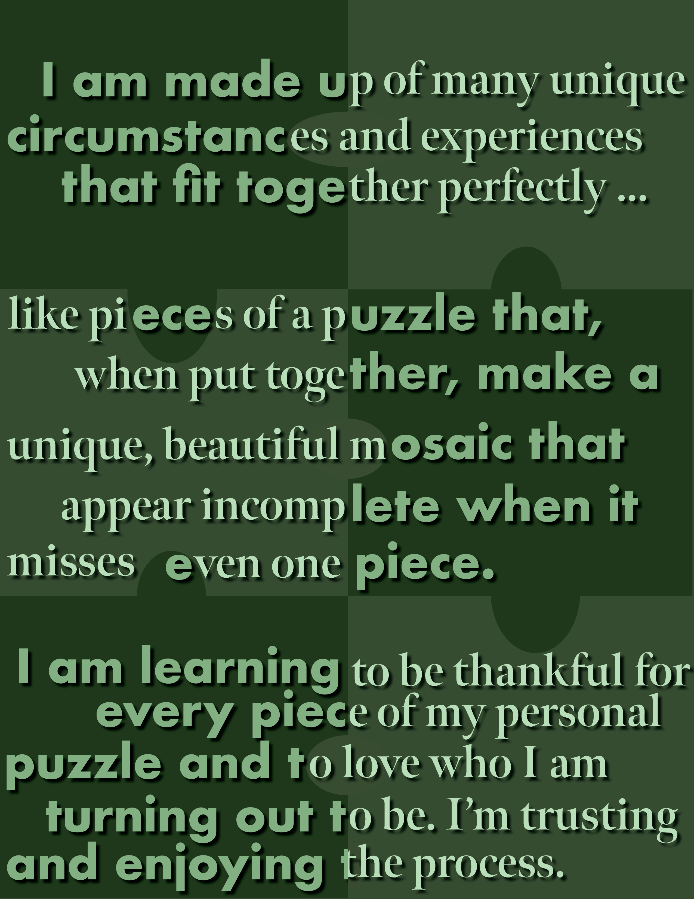
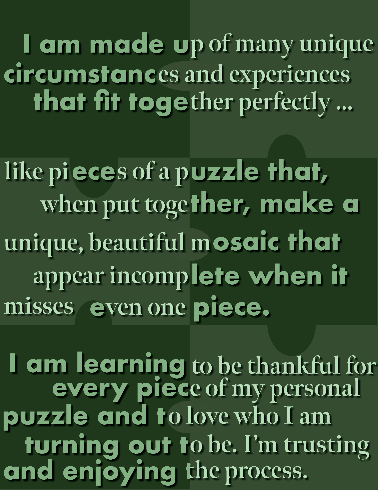

Ideation
After deciding on making a zine, I initially thought, "what story could I tell?" Reflecting on my past works, for the most part, they were either practice pieces (for fun, experimentation, etc.) or designs for work (like school organizations, companies, design challenges, etc.). So, pretty early on, I knew I wanted to make something more for me - something that I could be proud of and present to my friends. I ended up deciding to make a zine centralizing on how I would introduce myself, since I’m a bit awkward and my words don’t really present myself accurately. This way, I could dedicate spreads to my different hobbies, passions, and parts of my identity - my name, my ethnicity, my languages, my favorite forms of media, favorite foods, etc.
Layout
In terms of design, I had 2 main ideas, since I knew that my content would be pretty all over the place. My first concept was to tie the whole zine together with an overarching puzzle theme, or segment each spread by a different color of the rainbow. I ended up using the rainbow concept because it could reflect the different aspects of myself using the different colors. In terms of content, I also wanted to incorporate my fashion sense, since I love clothes, into my zine, so each spread has a vector graphic of me in a different outfit. Because of this, I dedicated one page of each spread to be more illustration based and another to be more text based. Here I played around with different concepts, using text as illustrations/art to take up negative space, such as my mirror concept, puzzle concept (I still got to use the concept that I thought I would scrap!), magazine cover concept, and phone concept. I wanted this to be my playground to show multiple facets of myself. What I failed to think of until the end however, were the front and back covers! So, conceptually I thought, in an introduction, you don’t know people at all (pretty much a void) at first, but by the end, you should get a good grasp of who they are. So I thought of using a polaroid that’s developing at first, and the same polaroid fully developed at the end. And in terms of the cover’s background color, I decided to go with pure white because that's the result when you put all colors of the rainbow together.

Illustration
In order to create the final illustrations, I used procreate in order to quickly and easily create my personal vector graphics with precision. I utilized Adobe Illustration to create each page, and decided on using variations of Futura as my body text, and using Meno Banner for my accent text.
Going in order, each spread represents a different aspect of what I would share during my ideal introduction.
- First glimpse, my full name, and what I prefer to be called
- Some basic information about me and what languages I speak
- Where I was born and where I was raised - and a little inside joke to my friends (since they joke around and say that I’m Pacific Islander, not Asian)
- My career and major + my convoluted path to get there, and what I use to cope with struggles
- A list of my favorite things
- Dance (cuz it's super important to me) and a final lesson that I’ve been learning this year
As mentioned above, for the front and back covers, I played with a polaroid photo concept, with the front cover showcasing a developing picture, which is again displayed as the back cover, but fully developed, to signify how an introduction helps us to buil our perception of people.


 

Mockups
As for the final mock ups, I decided to go for a minimalistic approach and showcase each spread and both covers in individual shots, to showcase what I would like them to look like if they were to be printed and distributed. I mainly used photoshop to create these simple mockups.